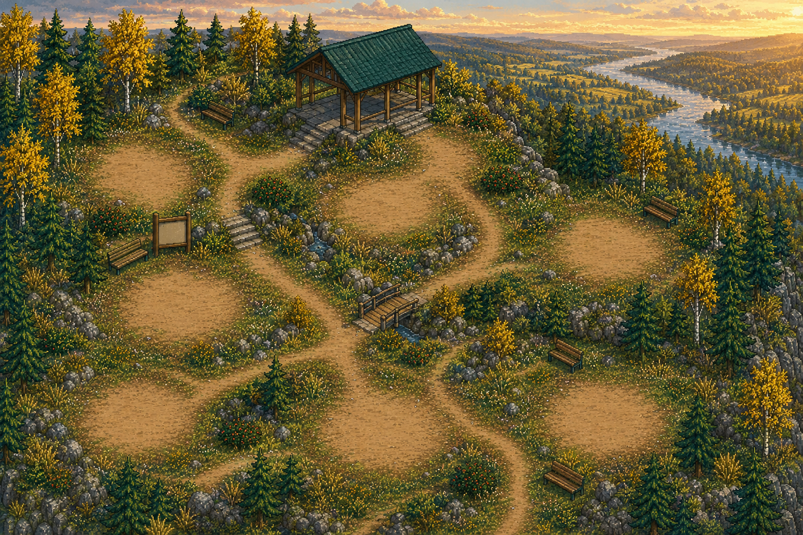

A CREE-FIRST READING ADVENTURE
Little Bear:
Words of Home
Learn by exploring, noticing, and seeing words return in meaningful places.
All 5 acts · 25 chapters · 125 missions open from the beginning
ACT 1 · CHAPTER 1
The First Blank Sign
Mission 1 · A Sign with No Words
Greetings, noticing, and the first things Little Bear can point to.
Explore six word signs. Cree appears first; English support always remains available.
FIRST LOOK
maskwa
bear
English support is visible on early encounters.
Noun · speaker verification required
MISSION CHECK 1/6
Which meaning matches maskwa?
Choose by meaning. No spelling or typing.
TRAIL SIGN COMPLETE
Six words now belong to this place.
This mission is complete. Its words will return in later checks.
6 words encountered
0 correct choices
0 of 5 chapters complete
CHAPTER 1
The First Blank Sign
RESTART JOURNEY?
Clear every saved word and chapter?
This cannot be undone. Your 750-word journal, mission progress and act checks will return to the beginning.
THE TRAIL OPENS
All 750 words have a place on the trail.
Little Bear has completed 125 missions across five acts. Every encountered word remains in the journal and every completed chapter can be replayed.
750 curriculum words
25 chapters
5 act gates